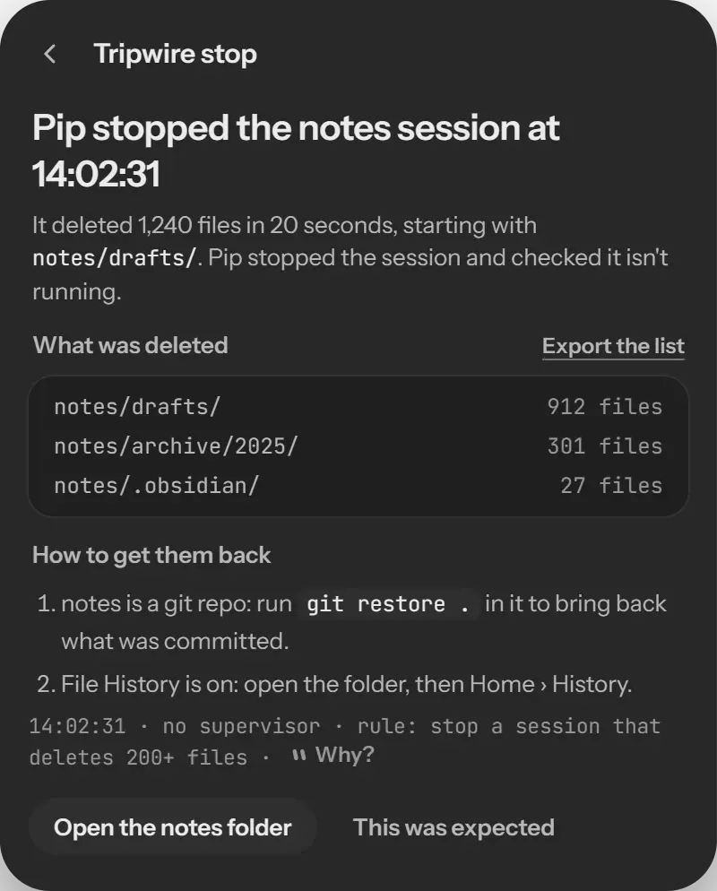
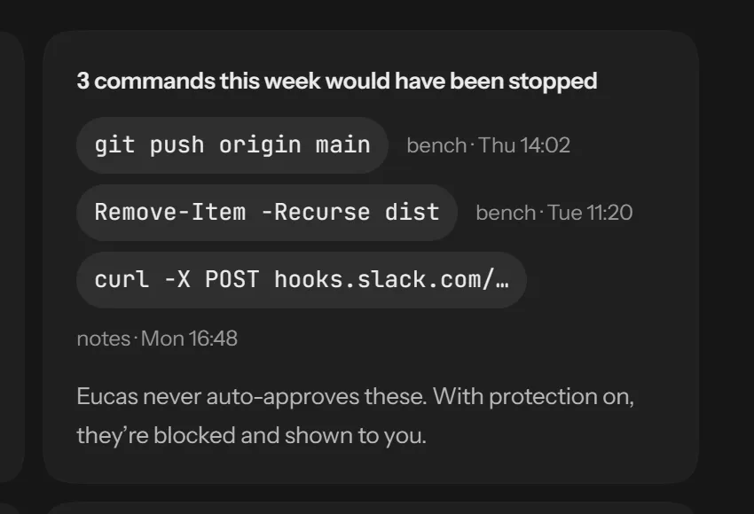
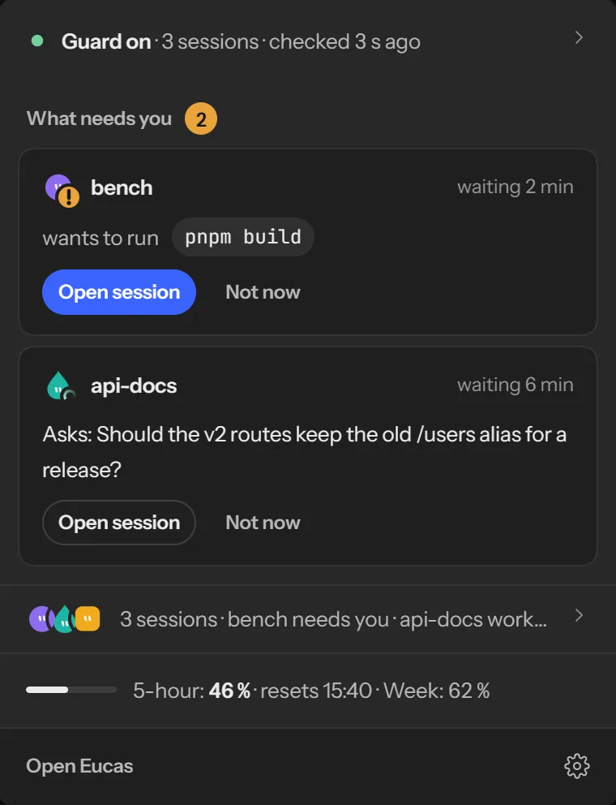
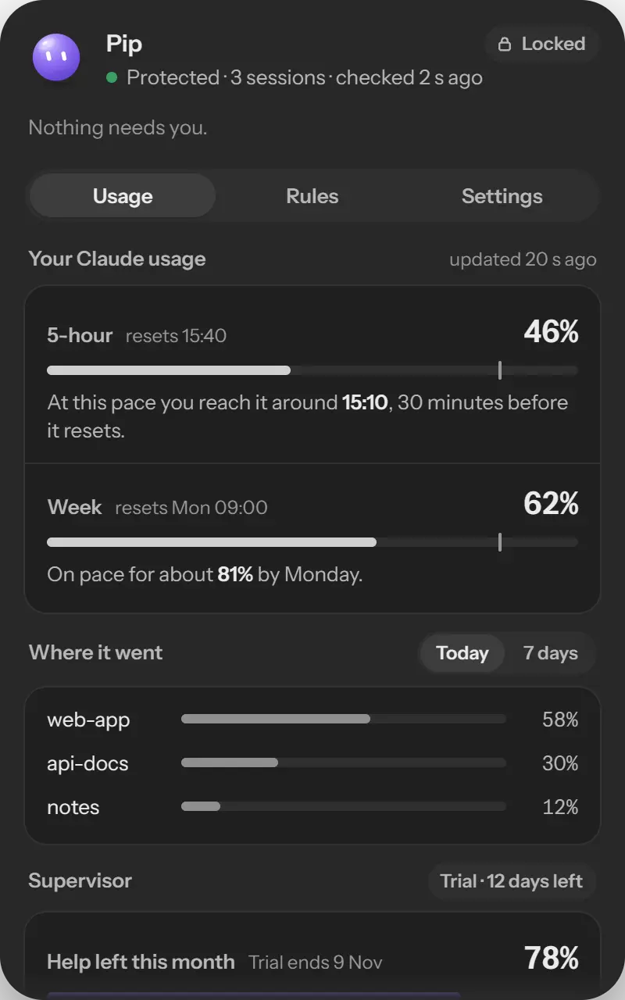
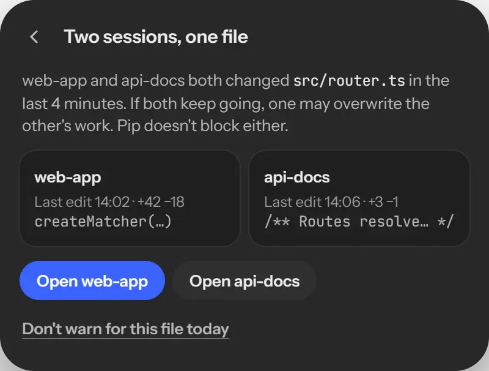
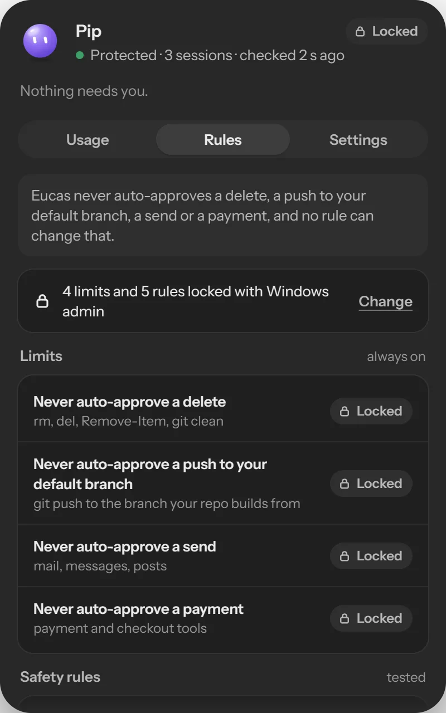

!benchnow
wants to run git push origin main
A push to your default branch. Eucas never approves this one; you do.
Open sessionNot now
Eucas guards the Claude Code sessions you already run, and tells you only what needs you. It never auto-approves a delete, a push to main, a send or a payment.
For Windows first. In development: the waitlist gets the first build.
wants to run git push origin main
A push to your default branch. Eucas never approves this one; you do.
Asks: Should the v2 routes keep the old /users alias for a release?
A question for you · the session is waiting
214 files deleted in 9 seconds. Eucas stopped notes.
The list of what went and how to get it back is ready.
pnpm test in bench/Eucas never auto-approves a delete, a push to main, a send or a payment, and no rule can change that.
The guard tells you the moment it isn't running. If a session starts deleting files in bulk, Eucas stops it and shows you what went and how to get it back.






The first time you open Eucas it reads last week's history on your PC: tokens, same-file clashes, and the commands it would have stopped.
Each rule in the library is tested against real sessions before it ships. Try them.
Let read-only git commands through
git status, git diff and git log stop asking you, in every repo.
Let file reads inside the project through
Read, Glob and Grep inside the folder run without a prompt. Outside it, you're asked.
Let pnpm test run in bench
It runs code from the repo, so the rule stays in bench/ and nowhere else.
Ask me before a delete, a push, a send or a payment
Always on. No rule can switch this off.
Free, or Pro |
Free$0 | Pro$20/month |
|---|---|---|
| The guard and the four limits | Included | Included |
| Your rules and the rule library | Included | Included |
| Usage, and when you'll hit your limit | Included | Included |
| Same-file warnings and the tray inbox | Included | Included |
| Your last 7 days | Last week | Every week, kept |
| Budgets that pause work before your limit | Not included | Per session and project |
| A supervisor that keeps sessions going within your rules | Not included | Included. It never approves anything |
| Work that continues with the laptop closed | Not included | Beta, in Claude's cloud |
| Founding members | No card, no account | The first 200 keep $15/month for life |
| Join | Join for Free | Join as a founding member |
Everything Eucas reads, it reads where it already is.
The guard, rules, usage and retro run locally. No Eucas server sits between you and Claude Code.
Eucas keeps counts and times, never the text of your prompts or files.
No access to your Claude credentials or tokens. You stay signed in the way you already are.
It's public on GitHub under the FSL licence, so you can check every claim on this page.
Planned for the first public build, so Windows can tell you who made it.
If protection is off or the guard stops, the tray says so until it's back.
Not yet. Eucas is in development. The waitlist gets the first Windows build, and you'll hear from us when it's ready to install.
Only what your own rules allow. A delete, a push to main, a send or a payment always comes to you. Pro's supervisor can nudge a stopped session to keep going, but it never approves anything.
Claude Code comes first. Which one follows depends on the answers to "Which agents do you use?" in the waitlist.
No. Eucas never reads your credentials or tokens. It works beside Claude Code through its own hooks and the history already on your PC.
$20 a month. The first 200 people who pay keep $15 a month for as long as they stay. Free stays free.
Budgets and the supervisor run on your PC. Laptop-closed work is the exception: it runs in Claude's cloud under your own account, and Eucas's limits don't apply there. We'll say exactly what it sends before Pro opens.
Windows first. Tell us your computer in the waitlist: it's how we decide which one is next.